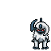
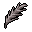
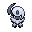

Pokédex / #359

Absol #359
Dark
It senses coming disasters and appears before people only to warn them of impending danger.
Generation 3 · Hoenn

Stats
| Attack | 130 | |
|---|---|---|
| Defense | 60 | |
| Sp. Atk | 75 | |
| Sp. Def | 60 |
In the wild
| Wild level | 40–50 |
|---|---|
| HP | 65 |
| Experience | 10 |
| Egg groups | Field |
Evolution
- Does not evolve.
Moves
| Level | Move | Type | Category | Power | Energy | Cooldown | Effect | |
|---|---|---|---|---|---|---|---|---|
| 1 | Tackle | Normal | Physical | 15 | 15 | 1s | Tackle is one of the most common and basic moves a Pokemon learns. It deals damage with no additional effects. | |
| 5 | Quick Attack | Normal | Physical | 40 | 40 | 6s | Quick Attack deals damage and has no secondary effect. | |
| 10 | Bite | Dark | Physical | 60 | 60 | 9s | Bite deals damage and has a 30% chance of causing the target to flinch. | |
| 15 | Scratch | Normal | Physical | 40 | 40 | 6s | Scratch inflicts damage and has no secondary effect. | |
| 20 | Pursuit | Dark | Physical | 40 | 40 | 6s | Pursuit deals damage and has no secondary effect. | |
| 25 | Slash | Normal | Physical | 70 | 70 | 11s | Slash deals damage and has an increased critical hit ratio. | |
| 30 | Swords Dance | Normal | Status | – | 100 | 60s | Swords Dance raises the user's Attack by two stages. | |
| 35 | Night Slash | Dark | Physical | 70 | 70 | 11s | Night Slash deals damage and has an increased critical hit ratio. | |
| 40 | Psycho Cut | Psychic | Physical | 7 | 80 | 16s | Psycho Cut deals damage and has an increased critical hit ratio. | |
| 45 | Sucker Punch | Dark | Physical | 80 | 80 | 12s | Sucker Punch deals damage and has no secondary effect. | |
| 50 | Razor Wind | Normal | Special | 80 | 80 | 15s | The user of Razor Wind will 'whip up a whirlwind' on the first turn. On the second turn, Razor Wind deals damage and has an increased critical hit ratio. | |
| 55 | Double Team | Normal | Status | – | 150 | 90s | Double Team increases the user's speed into maximum, creating illusions. | |
| 60 | Future Sight | Psychic | Special | 120 | 120 | 15s | Future Sight deals damage, but does not hit until two turns after the move is selected. | |
| 65 | Payback | – | Physical | – | 100 | 90s | Any move is reflected back to the attacker. | |
| 70 | Brutal Swing | Dark | Physical | 60 | 60 | 9s | Brutal Swing does damage and has no secondary effect. |
Field abilities
StrengthRock SmashCutFlashRideFind
Special abilities
PressureSuper Luck
Egg moves
AssuranceCurseDouble-EdgeFaint AttackHexMagic CoatMe FirstMegahornPlay RoughPunishmentZen Headbutt
Technical machines
Aerial AceBlizzardCalm MindDouble TeamDream EaterFire BlastFlamethrowerHailHyper BeamIce BeamProtectRain DanceRestRock SlideRock TombSandstormShadow BallShock WaveSubstituteSwords DanceTauntThunderThunder WaveThunderboltToxic
Drops
| Item | Amount | Chance | |
|---|---|---|---|
| black orb | 1 | 50% | |
| night orb | 1 | 16.7% | |
 | dark feather | 1 | 16.7% |
| hard claws | 1 | 12.5% | |
| shadow orb | 1 | 10% | |
| cutting fang | 1 | 10% | |
| forbidden fruit | 1 | 10% | |
| dark claws | 1 | 8.33% | |
| grey-blue powder | 1 | 6.25% | |
| dark crystal | 1 | 5% | |
| luminous orb | 1 | 5% | |
| astral source | 1 | 5% | |
| onigiri | 1–5 | 5% | |
| Dread Plate | 1 | 0.1% | |
 | absol doll | 1 | 0.1% |
| held black glasses | 1 | 0.02% |